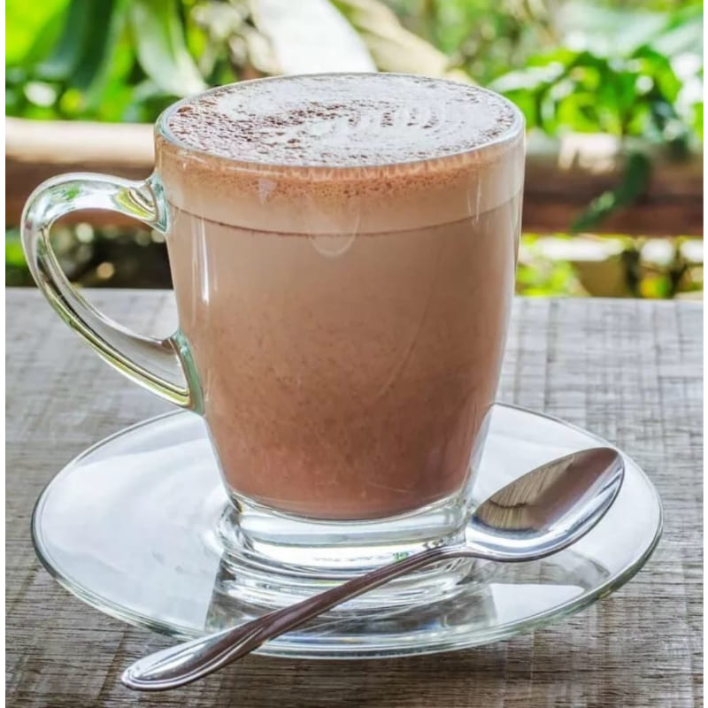
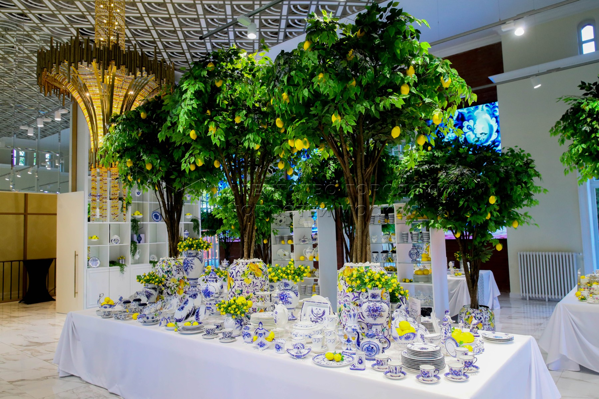

ДОСЬЕ: ОБЪЕКТ МЕДКОВ

ФОТО: 20.03.2026
Характеристика
Желание: чтобы в честь него называли города, улицы и школы.
Миссия: разгадать тайны души Сержа и попасть в его представление о том, что круто.
Основной посыл (Legacy): продаем ОБРАЗ ЖИЗНИ.
Вместо перечисления УТП — строим киноленту. Прописываем сценарии.
АНАЛИЗ ПРЕДПОЧТЕНИЙ
2.1 Биологические виды

Замечена особая привязанность к рыбкам.
2.2 Поведенческий юмор

- Ребёнок уже вернулся из школы, что рядом с кварталом, и играет в снежки. Домашку, видимо, решил отложить до вечера. Не осуждаем.
- У витрины пекарни мама с коляской решает вечный вопрос: круассан или улитка с корицей? (снова возьмёт оба).
ОБРАЗЫ И КОНКРЕТИКА
2.3 Сборник оперативных данных
- тайцзи с тренером освоить «циркуль» на коньках;
- освоить «циркуль» на коньках;
- В такие моменты вспоминаешь, как в детстве считал снег сладкой ватой. И вот вы уже снова тот самый беззаботный ребенок, который не может пройти мимо нетронутого сугроба.;
- переход между корпусами и путь к общественным пространствам не потребуют ни скафандра, ни верхней одежды.;
- Витрины кофеен манят зайти и попробовать свежий бленд. Разгорячённые дети спешат домой после тренировки в Академии Овечкина, чтобы закинуть клюшки и поскорее вернуться к друзьям на улицу. А молодая парочка на Центральном бульваре безуспешно пытается вытащить счастливого хаски из сугроба.;
- Парк «Новодевичьи Пруды» будто иллюстрация к старинной сказке. Роль волшебных героев здесь исполняют мама-утка Миссис Маллард и её восемь отпрысков. Порой бронзовым утятам даже повязывают шарфики, чтобы они не замерзали.;
- Следом уже мама выводит на прогулку любимого шпица и на обратном пути сворачивает в кофейню за круассанами — их аромат способен разбудить даже заядлого соню.;
- Взрослых ждёт ледяной немецкий рислинг, который сомелье заботливо отложил именно для этого случая.;
- Из детской доносится цоканье игрушечной посуды: дочь кормит кукол завтраком. Бродите между полотен, пока взгляд не цепляется за одну работу. В ней есть что-то неуловимое: может быть, игра света, может быть, выражение глаз. Вы замираете, разгадывая её тайны, и не замечаете, как прошла четверть часа. Решение приходит само собой — этой картине место в вашей гостиной. После обеда везёте дочь в театр «Вернадского, 13». Сегодня там «Кот в сапогах». В зале гаснет свет, и вы вдруг ловите себя на мысли, что эту историю когда-то читала вам мама. Та самая книжка с картинками, которую вы вместе перелистывали перед сном. А сейчас уже ваш ребёнок, затаив дыхание, следит за приключениями знакомого кота.;
- Ребенок осваивает джунгли на детской площадке (почти как настоящий хоббит), а вы листаете Толкиена под шум листвы.;
- Французский бульдог, высунув язык, проносит мимо санки с хохочущим ребёнком. А влюблённая пара, кажется, решила добавить в свой кофе весь маршмеллоу, что нашёлся в кафе.;
ПРАВИЛА КОММУНИКАЦИИ
2.4 Техническая точность
- Не «быстро добраться», а «... минут на автомобиле».
- Не «новая дорога», а «нагрузка на Мосфильмовскую снизилась на 25%».
- Не «лучшая школа», а «школа в ТОП-20, лекторы из Бауманки».
2.5 Художественные образы (Радиус допуска)
- Мороз оставляет румянец на щеках, глаза горят азартом;
- Короткая прогулка — и вы посреди хрустального царства;
- Знакомство с ОСТРОВОМ.8 начинается с гипнотизирующей архитектуры. Здесь и величие волн северных фьордов, и тихая гавань с робкой рябью воды.
3. Факторы раздражения
Клише, однотипные фразы, вялотекущие предложения, похожие посты, отсутствие конкретики.
ПЛАН ОЧИСТКИ (ЧИСТКА)
4. От чего избавляемся
- 4.1 Бесконечные частые правки.
- 4.2 Тавтология (повторы слов, однокоренные рядом).
- 4.3 Канцеляризмы и «мертвый» язык.
ЛАБОРАТОРНЫЕ СРАВНЕНИЯ
☕ ГИПЕРФИКС НА КАКАО

идеальная чашка, идеальный момент
Какао, которое обволакивает теплом и возвращает в детство. Смотри, как тают зефирки в каждой кружке — настоящий гиперфикс уюта.
— секретный ингредиент: зефирное настроение —
🥞 БЛИНЫ С ИНТЕРЕСОМ
Три взгляда на классику. Текстура, настроение, неожиданный поворот — каждый блин хранит свою историю.


«Интерес» рождается в деталях: от выбора начинки до игры света на румяной корочке. Попробуй собрать свой идеальный образ.
🍽️ ФАРФОР С ПРАВИЛЬНЫМ ВАЙБОМ

тишина, эстетика, осознанность
Фарфор звучит. В нём есть особая лёгкость, тактильная память и вайб, который не спутаешь ни с чем. Каждая сервировка — повод для неторопливого разговора и момента, который хочется сохранить.
✔ Молочный оттенок старины
✔ Звонкость, похожую на зимнее утро
✔ Глазурь, хранящую тепло рук